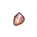
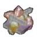
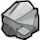
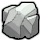
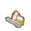

HSK 官方把它归在 Extracted/Metals/PRS(贵重品) 或 Metallic/RARBar 但材质覆盖≤2 的提纯金属——宝石·化石·未加工贵金属·纯铬纯钴纯镍纯钨钒锰钼锌焊锡等,只作收藏/贸易/配方原料与合金添加剂,**不参与能力档阶梯评价**(标 V 级)
太空Vile贵重级·太空·钒（V）Vanadium
贵重品·不作材质提纯金属·焊料(合金添加剂) —— 建造/打造清单里不会拿它当材质(覆盖 0 件);当前被 3 条配方当原料消耗
 生效·ACore_SK
生效·ACore_SK 生效·BCore_SK
生效·BCore_SK 生效·CCore_SK
生效·CCore_SKThings/Item/Ingot StackCount (213,232,255)被3条配方消耗
护甲 —/—/— 利钝 —/— 价值 15 质量 0.40 Bulk 0.40
stuff —
HSK RARBar
产自 Spec: Carnotite (15 DU, 15 V)(电解精炼厂/Metal processing IV) ; Spec: Titanomagnetite (20 Fe, 20 Ti, 10 V)(电解精炼厂/Metal processing IV)
源 Vile's Materials Science
Alloys_Intermediate.xml
未标注科技档未标注其他本地补丁×3上游补丁×1贵重级·无档·粗糙宝石RoughGem
贵重品·不作材质宝石·收藏(未加工贵重品) —— 建造/打造清单里不会拿它当材质(覆盖 0 件);当前被 1 条配方当原料消耗
① 起点 · Minerals 的 Defs 写 Things/Item/Resource/RoughGem

aMinerals bMinerals
bMinerals
cMinerals② Minerals 换成 Things/Item/Chunk/Stone ← HardcoreSK.xml
 StoneACore_SK
StoneACore_SK
StoneBCore_SK StoneCCore_SK
StoneCCore_SKThings/Item/Resource/RoughGem StackCount 被1条配方消耗贴图链 3 段
护甲 —/—/— 利钝 —/— 价值 100 质量 0.20 Bulk —
stuff —
HSK PRS
产自 —(无产出配方:矿石开采 / 基础掉落 / 商人购买)
源 Minerals
Item_Resource_Gems.xml
未标注科技档未标注其他上游补丁×1贵重级·无档·粗糙超硬宝石RoughUltrahardGem
贵重品·不作材质宝石·收藏(未加工贵重品) —— 建造/打造清单里不会拿它当材质(覆盖 0 件);当前没有配方吃它(纯收藏/贸易/待接入)
② Minerals 换成 Things/Item/Chunk/Stone ← HardcoreSK.xml

StoneACore_SK StoneBCore_SK
StoneBCore_SK StoneCCore_SK
StoneCCore_SK③ 生效(终态) Things/Item/Resource/RoughGem
 aMinerals
aMinerals
bMinerals cMinerals
cMineralsThings/Item/Resource/RoughGem StackCount 贴图链 3 段
护甲 —/—/— 利钝 —/— 价值 300 质量 0.20 Bulk —
stuff —
HSK PRS
产自 —(无产出配方:矿石开采 / 基础掉落 / 商人购买)
源 Minerals
Item_Resource_Gems.xml